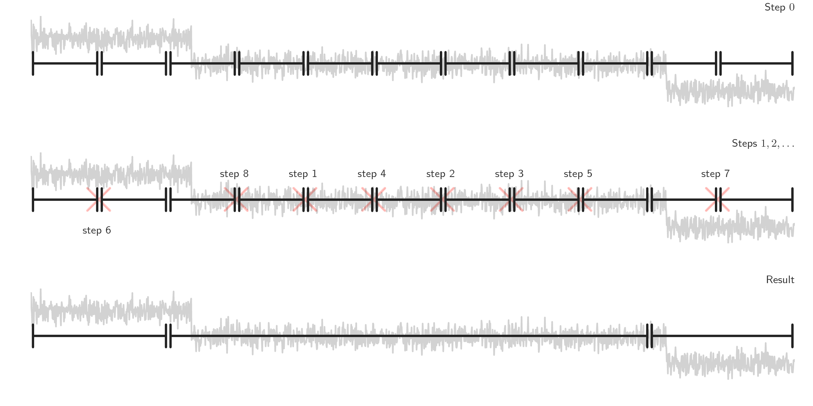

Bottom-up segmentation (BottomUp)#
Description#
Bottom-up change point detection is used to perform fast signal segmentation and is implemented in
BottomUp in a sequential manner.
Contrary to binary segmentation, which is a greedy procedure, bottom-up segmentation is generous:
it starts with many change points and successively deletes the less significant ones.
First, the signal is divided in many sub-signals along a regular grid.
Then contiguous segments are successively merged according to a measure of how similar they are.
See for instance [Keogh2001] or [Fryzlewicz2007] for an algorithmic
analysis of BottomUp.
The benefits of bottom-up segmentation includes low complexity (of the order of
\(\mathcal{O}(n\log n)\), where \(n\) is the number of samples), the fact that it can extend
any single change point detection method to detect multiple changes points and that it can work
whether the number of regimes is known beforehand or not.

Usage#
Start with the usual imports and create a signal.
import numpy as np
import matplotlib.pylab as plt
import ruptures as rpt
# creation of data
n, dim = 500, 3 # number of samples, dimension
n_bkps, sigma = 3, 5 # number of change points, noise standart deviation
signal, bkps = rpt.pw_constant(n, dim, n_bkps, noise_std=sigma)
To perform a bottom-up segmentation of a signal, initialize a BottomUp
instance.
# change point detection
model = "l2" # "l1", "rbf", "linear", "normal", "ar"
algo = rpt.BottomUp(model=model).fit(signal)
my_bkps = algo.predict(n_bkps=3)
# show results
rpt.show.display(signal, bkps, my_bkps, figsize=(10, 6))
plt.show()
In the situation in which the number of change points is unknown, one can specify a penalty using
the pen parameter or a threshold on the residual norm using epsilon.
my_bkps = algo.predict(pen=np.log(n) * dim * sigma**2)
# or
my_bkps = algo.predict(epsilon=3 * n * sigma**2)
For faster predictions, one can modify the jump parameter during initialization.
The higher it is, the faster the prediction is achieved (at the expense of precision).
algo = rpt.BottomUp(model=model, jump=10).fit(signal)
References#
[Keogh2001] Keogh, E., Chu, S., Hart, D., & Pazzani, M. (2001). An online algorithm for segmenting time series. Proceedings of the IEEE International Conference on Data Mining (ICDM), 289–296.
[Fryzlewicz2007] Fryzlewicz, P. (2007). Unbalanced Haar technique for nonparametric function estimation. Journal of the American Statistical Association, 102(480), 1318–1327.